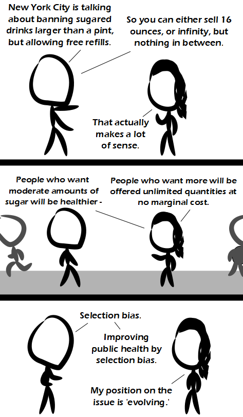

Comic JK 925
When I Feel Like It
⇤
<
?
>
⇥

⇤
<
?
>
⇥
Forum
.
RSS
.
Digg
.
Facebook
.
Reddit
.
Twitter
.
Stumbleupon
Enter your thoughts on number 925 here. Please, no spamming, trolling, phreaking, or statistical malpractice. they�re sick and tired of hearing about the health effects of drinking pop. An additional 12% of pop drinkers say that they could do to lose some weight and cut back on their sugar intake, while the other 10% say that they'd like another bottle of Caffeine Free Diet Pepsi while they contemplate suing the statistician who came up with these figures for statistical malpractice. >I'm not confident in your sigfigs. >Assertion rejected for lack of sufficient significant digits. 99% of soda drinkers are tired of the other 1% calling it pop. What's soda? > 99% of Canadian pop drinkers are tired of freaks calling it "soda", because that's totally and completely inaccurate. "Soda" was the fizzy BEFORE carbonation. Modern carbonated beverages are NOT soda. >> This! When your great grandma poured powdered stuff into water in the 1930s to make it fizzy, THAT was soda. >>> Sometimes I drink soda. I've never seen a beverage of a type 'pop'. I drink fizzy beverages more than I drink soda. >>>> I drink soft drinks. >>>>> I drink Alcohol >>>>>> I drink your milkshake. >>>>> What, like water? It's non alcoholic, it's soft. >> 93.3% of non-native English speakers are tired of being confused by all these silly vocabulary differences in different countries. (an olsou bai de lak ov konsistant pronaunsieixon an orthagrafi). >>> 6.7% of all native English speakers are tired of the same thing. >>>> And the rest are English Majors. This percent of pop drinkers wants actual sugar in their sodas rather than HFCS. > HFCS is actual sugar. Maybe you mean "sucrose". >> Plus, sucrose and HFCS are absolutely no different health-wise. >>Actually, the FDA just ruled that HFCS is NOT sugar. >>>HFCS is exactly that: corn syrup, a sweetener. Fructose is sugar, like glucose or sucrose. >>>>HFCS is just glucose with some fructose added in to make it taste sweet. >>>>>It's ridiculous that people make such a fuss about HFCS because what happens to sucrose as soon as it hits your stomach acid -- it gets cleaved in half to become glucose and fructose. >I'll take the HFCS. I've had the "throwback" products that use real sugar; no thank you. >>I prefer galactose-glucose combined sugars. The 'artificial sweetener' ones not only don't taste very good to me, but cause an allergic reaction. >>>Where do you find that? HFCS is not sugar - it's a sugar solution. It has 5% more fructose than "regular sugar". "Sugar" is the chemical definition for any chemical within that family. "Sugar" colloquially refers specifically to sucrose. Let's keep it straight people. Yes glucose, fructose, galactose, maltose, lactose are all sugars. But outside of a bio/chemistry setting, "sugar" means sucrose. > Where are you getting this 5% number from? What makes HFCS 'high fructose' is that regular corn syrup is just glucose, and HFCS has some fructose added in. HFCS can range from as low as a few percent of it being fructose to as high as over 90% being fructose. >>I thought they generally use 55% fructose. Maybe it's more of a guideline than a definition. But here is one source: www.livestrong.com/article/249286-chemistry-of-high-fructose-corn-syrup/ Your mother is my sugar mama, and she always chooses infinite refills. >Your mother was serving infinite refills this weekend after a trip to the local white castle.